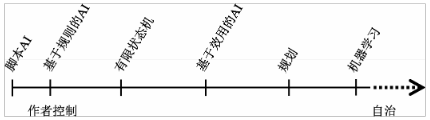

游戏中的人工智能（简称AI）应该仅仅只做一件事：赋予开发者能力，为玩家创造非凡的体验。我们用的每一项技术、玩的每一种技巧和编写的每一种算法都要为了这个唯一的目标服务。维基百科对AI给出如下定义：“对agent（智能体）的研究和设计”，这里的agent是一个系统，该系统能够感知环境并做出反应以最大化其行动成功的机会[Wikipedia 12-A]。当然，这并不是AI的唯一定义——这个术语出了名的难定义——但维基的定义精确描述了我们在大学里研究和教授的AI的大部分含义。既然这就是教授们在课堂上讲述的AI含义，那么我们也将采用这种学术界说法来解释AI。电影动画师经常把他们在电影里创造的生命幻象（illusion of life，据说是迪士尼创造的一个词）称为虚拟生命（artificial life）。这是一个和AI区别很大的概念。卡通里的角色不必“最大化他们行动成功的机会”。例如，歪心狼Wile E. Coyote大部分时间在做的事情恰恰相反，都是在最大化失败。他们试图让观众从心底相信他们创造的现实（尽管这个现实显然是虚构的），
1 什么是游戏中的人工智能3 带来令人信服的体验，这也是影片的全部意义。每个游戏都是不同的，而且不同游戏对AI的需求差别也很大。必须说的是，相对于AI的经典学术观点，游戏AI的目标通常和迪士尼的虚拟生命有着更多的共同点。与卡通一样，开发游戏是为了娱乐。与卡通一样，游戏并不是讲成功最大化、认知模型或者说并不是真正智能的，而是要讲一个故事、创造一种体验、创造一种智能的幻觉（illusion of intelligence）[Adam 99]。在某些情况下，我们创造这种幻觉所需的技术和学术界对AI描述是类似的，但在大部分情况下，它们之间是不同的。我们所说的“游戏AI”不是泛义的AI，游戏AI的重点是创造一种智能的表象，为玩家创造一种特殊的体验，
而并不是专注于创造像人类那样真正的智慧。
游戏AI的目标是最大化玩家的乐趣（fun），而不是最大化成功的概率。当然，这可以是AI的目标，但它可能不是AI最好的定义。一方面，就像术语AI一样，“乐趣”也是一个众所周知非常难以定义的词；另一方面，并不是所有游戏都是关于乐趣的。有些游戏是在讲故事，或者游戏里有一个非常酷的角色。有些游戏则是制造一种兴奋的感觉、冒险的感觉、悬疑甚至恐惧的感觉（就像恐怖电影）。还有些游戏则是给玩家一种赋能感，使玩家感觉自己是个“大人物”。只有一点是不变的，那就是所有游戏都要给玩家创造一种特别的体验，不管这种体验是什么。游戏AI的目的（以及游戏的所有其他部分，就此而论）就是要支撑那种体验。因此，游戏中所用的技术最好能刚好给玩家带来他所渴望的体验，不多也不少。
玩家是乐意进入我们为他们创造的体验之中的。他们愿意相信我们创造的幻境，抛开那种不由自主产生的怀疑——明明知道这里面的角色和事件都是虚构的。也就是说，为玩家提供一种足够令人信服的幻觉，使得他们能抛开怀疑，这是我们的责任。只要玩家就像对待一个真实存在的生命一样对待AI角色，那么我们就成功了，即使底层算法实际上可能很简单。相反，只要
第一部分 通用智能4 我们AI角色的某些行为（或不作为）让玩家想起来，它只是一个程序，不是真实的，那么我们就失败了。ELIZA（由Joseph Weizenbaum 1964年开发的一个AI心理学家 [Wikipedia 12-B]）就是一个很好的例子。这充分说明，即使用一个简单的算法也能很容易地获得玩家的信任；同时当算法行为不当时，也会很快失去玩家的信任。因为渴望玩游戏，因为人类大脑运转的方式，玩家实际上很宽容。只要AI的行为基本上是合理的，玩家的心智将为AI的行为给出解释，这个解释往往相当复杂，要比AI实际想讲述的要复杂得多，但基本上也是可信的。从某种程度上而言，认为建一个AI系统太难是个误解。过度设计AI，不仅会浪费宝贵的开发时间，也会导致一种情况——就算角色行为对AI来说是合理的，却可能与玩家对游戏AI行为的心理模型不匹配。换句话说，如果你知道AI在想什么，你就能理解这些AI的行为是合理的，问题是玩家不知道。结果就是，那些精心挑选的决策最后看起来像是随便做的，或干脆就是错的。我们必须不惜一切代价绝对避免的一件事就是人工愚蠢（artificial stupidity）—选择一个看起来明显错误或根本没有任何意义的响应。常见的例子有：穿墙而过、被困在地形里或看不到玩家正在向你开枪。甚至一些真实的人类行为 AI角色也应该避免，因为那些行为如果出现在由AI控制的角色身上时会显得不像人类行为。例如，人类经常改变他们的想法，但当一个AI角色如此时，往往让玩家觉得是AI算法有错，而不会觉得是算法在重新评估环境后做了新的决策。对于人工愚蠢问题，一个直接的解决方案就是让AI更聪明——但玩家想要的聪明可能千差万别，很难在所有情况下满足所有人的要求。因此，我们使用了各种其他方法。在一些游戏里——僵尸游戏就是一个很好的例子——AI角色被故意设计得有点愚蠢或总是摇晃不稳，以便让它们的古怪行为更容易被接受。在其他游戏里，AI角色一般用简短的台词，有时这种台词被称为“吼叫”（barks），提示玩家接下来该怎么做。例如，它们可能会大喊“手榴弹！”或“我被击中了！”，这些台词真的不是用来与其他AI角色沟通用的（对于AI角色的沟通，我们通过在代码中传递消息来实现），而是向玩家解释它们行为的。还有一些游戏（如《模拟人生》或者《动物园大亨》）甚至把图标放到人物角色的头上，显示角色的内心想法。Creatures这个游戏发
1 什么是游戏中的人工智能5 布15年后仍然以其开创性的AI而闻名，当一个生物改变主意时甚至会用“迷惑”图标，以提示玩家这个行为变化是角色自主产生的。
对于游戏AI的各种体系结构，以及哪个结构最好，已经有太多的讨论。事实上，本书也有一部分是专门讨论这个话题的。从学术AI的角度来说，我们能想到的第一个方法就是，建立一个启发式AI去近似想要的体验，然后利用机器学习优化这种体验。这种方法有几个问题，而最明显的就是，这种体验通常是游戏设计师定义的——这个设计师可能是游戏的开发者也可能不是——用含糊的人类语言来定义体验。那么，你如何写出启发式函数来表达最大化“乐趣”、“兴奋”或“冷酷的态度”呢？并不是说启发式算法没有用，实际上，基于效用的AI方法是比较常见的方法之一，特别是对于需要做复杂决策的游戏（例如，策略游戏和模拟类游戏，如《模拟人生》和《动物园大亨》）。然而，保留作者控制（authorial control）是至关重要的，也就是说，要确保AI的作者能够调整和优化AI以保证游戏能达到期望的体验。如果我们放弃AI控制而放任机器学习算法来控制AI，那么要想获得期望的结果是非常困难的。然而，还有一个需求与作者控制是相矛盾的，即我们希望角色是有反应的（reactive）——它们能够感知环境，并据此选择适当的行为动作来回应，还能根据游戏情节的发展时刻变化。反应性和作者控制并非相互排斥。你可以建立一个积极响应的系统，但因为你控制了系统评估环境的方式，所以系统在做决策时，仍然会有作者控制。然而，控制一个有反应的AI会更复杂，因为作为开发者你必须考虑到你做出的改动将改变AI的行为决策，而不是简单地直接改变角色的行为。对此，没有一个放之四海而皆准的正确答案。一些游戏（如策略游戏或像《模拟人生》这样的游戏）需要更多的反应性，而其他一些游戏（如《魔兽世界》）则在设计上做了周全的考虑，为AI编写了更多脚本，为玩家提供了一个制作精良但是又高度可预测的体验。这些做法都是对的，每一种方案都产生过非常优秀的游戏，但它们传递的体验是不同的，这也是你在选择AI算法时需要考虑的因素。对于游戏AI而言，有多种流行的架构，其中一些将在本书后面讨论。有些架构提供了很好的反应性，而其他的则提供了更多直接的作者控制。图1.1大致反映了几种最受欢迎的游戏AI架构对两种性能的折中。但要记住，每个架构都有其优缺点和特质。这幅图只是一个粗略的指引。
注意，把机器学习放在图1.1中仅仅是因为其在学术界的声望。极少有游戏使用机器学习作为核心AI。同样，这幅图中也有意省略了行为树。这是因为行为树的性能在很大程度上取决于决策所使用的组件类型。如果这些组件都很简单，例如Damian Isla那些最初的设想[Isla 05]，然后行为树就变得像有限状态机了。然而，行为树的优势之一，是每个节点都包含最适合的所有决策逻辑，让你为每一个决策选择最合适的架构。在选择AI架构时，还有一个复杂的因素是不确定性。对于许多游戏，我们要给角色添加一定量的随机性，以便对于玩家来说它们的行为是不可预测的（如果行为可预测将很有可能被玩家利用）。同时，我们也不想让AI做出明显错误的行为，所以要确保这个随机性行为仍然是合理的。某些架构更需要添加一些随机性进去（特别是行为树和基于效用的架构，它们善于处理随机情况）。所以不确定性，是你设计游戏时需要考虑的另一个因素。
在作者控制和避免人工愚蠢的需求下，游戏AI的配置必然是一个迭代过程。配置一个AI，让它能处理所有可能的情况——或至少每一种可能性很大的情况——然而，既要传达作者的意图又要产生可信的现实行为，很难一次就大功告成。必须反复测试AI，在测试中发现最糟糕的问题，纠正这些问题，然后再测试。据说开发了UNIX和C语言的Brian Kernighan曾说过，“调试比一开始写代码要难两倍。因此，如果你写的代码非常巧妙，你可能还没有足够的智
1 什么是游戏中的人工智能7 慧来调试它”[Kernighan]。游戏AI也是如此。对代码的任何改动都可能有意想不到的副作用。换句话说，你在某处修复一个bug或做了某种折中，可能会导致其他某个地方出现一个更微妙的问题。底层算法越简单意味着你可以在自己脑子里对AI进行控制的部分越多。结果是，当底层算法改动时，你能充分地看到所有的副作用，这样你的开发将更加安全和快捷，而最终开发出来的游戏将更精致（找不到更好的词来表达了，或者说玩起来更有“乐趣”）。看一看用于游戏的各种常用的决策算法：有限状态机、脚本、行为树、基于权重的随机算法甚至目标导向行为规划算法——这些算法本身是很简单的，建立在这些框架顶端上的配置可能非常复杂，但底层的代码是简单、易于理解、易于跟踪和调试的。但是，要事先说明一下：许多简单的算法（以有限状态机为代表）扩展性很差，没法跟上AI的发展。如果使用有限状态机，状态转换的数量随着状态数成指数级增长。显然，这很快就会变得不可收拾。因此，一个真正优雅的架构，不仅应该简单易懂，而且还应该简单易用——这意味着它的扩展性必须好。
关于游戏AI的作弊，已经有很多的讨论，但似乎我们经常在什么是“作弊”上无法达成一致。让AI角色比玩家更强大一点算作弊吗？要是给它们一些物品来作为奖励算作弊吗？在策略游戏里给AI角色一些经济上的奖励，让它们能够购买更多的游戏单位算作弊吗？那么要是我允许玩家挑选奖金的规模，并称之为“难度等级”，算作弊吗？最近我和Bob Fitch聊天时得知一个有趣的故事，Bob Fitch是Blizzard公司策略游戏的AI负责人[Fitch 11]。表面上，最初《魔兽争霸》的场景AI会简单地等待一段固定的时间，然后开始孵化一波作战单位攻击你。它就在灰雾边缘孵化这些作战单位，也就是说，就在你的作战单位的可视范围外。它会持续孵化和攻击下去，直到你的防御系统几近崩溃，然后它就停止孵化攻击，让你能痛击余下的敌人，赢得战斗。这种方法似乎相当明显地越过了“作弊”的分界线。AI不必担心要去建造建筑、节省资金或招募作战单位——它自己孵化想要的任何东西。另一方面，思考一下这种方式的体验效果。不管你是否擅长这个游戏，都会给你创造一个史诗般的战争场景——在这个较量中推动你发挥能力的极限，但最终，你会克服一切困难，获得胜利。当然，这种作弊有个不好的一面，那就是只有在玩家啥都不懂时才有用。如果玩家知道AI都做了什么，那么他们的体验就完全不同了，因为没有人喜欢被愚弄。不幸的是，近来，特别是随着互联网的普及，现在的玩家已不像1994年那时的玩家那样容易被愚弄了（也不那么宽容了）。另一种类型的作弊就是纯粹的情报作弊。也就是说，为了摸清作战单位是否存在和位于何处，AI必须探测它吗？问题是，虽然通过视线检查很容易算出可见范围，但是要记住视野中的内容并据此来预测未来的事件则有点难。换句话说，如果我看到一个游戏单位，但随后它走出了我的视野范围，如何记住它的存在？我怎么知道它的位置？如果后来我看到了一个相同类型的单位，如何知道它是否就是之前的那一个？人类相当擅长做这类事情，但要做得好就需要把对手建模、直觉和纯粹猜测等方法组合起来使用。这些能力都是计算机的短板。不幸的是，对于许多类型的游戏，AI有相当好的预测能力是极为重要的，如预测资源位置、预测敌人实力和位置。如果玩家预测得不准，他们就会输掉游戏，但这是大部分玩家可以接受的失败。“我只是没找到资源”，或“这一次你算计了我，不过下次我会打败你！”，然后他们又开始新一局游戏，或从某个存档重新加载，这种挑战将他们拉回到游戏。另一方面，如果AI预测错了，玩家就会赢得很轻松，根本没体验到什么重大的挑战。他们不会认为，“嗯，AI可能只是运气不好”。他们只会觉得，“这是一个愚蠢的AI”。一旦他们认为AI是“愚蠢的”，你所追求的那种体验几乎肯定没法达到了。归根到底，AI是否要能作弊是一个相对简单的决定。当且仅当作弊能提高玩家的体验时，你就应该让AI能作弊。但要记住，如果你作弊被玩家发现，将改变玩家的体验，那就没什么好处了。在《可汗：战争之王
2》（Kohan2，一款即时战略游戏，它的AI设计广受赞誉）中，有两个巧妙的作弊。第一个是，在探索地图时，我们每30秒左右给AI一个随机的机会作弊，如果有机会作弊就让AI去探索有些好东西的区域。这帮助我们避免游戏AI不幸碰巧没找到任何附近的资源的状况发生。第二个是，在一个区域内保持和对手的实力相近（但不设定具体位置）。这使我们能够分配合理的兵力去进攻和防守，以避免兵力部署的徒劳无功。没有评论家能发现所有的作弊，事实上，许多他们认为的AI作弊行为，如前所述，其实只是我们作弊方式的副作用
学术界对AI的定义包括很多内容。它可以是关于解决困难问题、再造人类智慧、为了解更多有关我们大脑如何工作而设计的人类认知模型、复杂操作环境中的性能优化（例如，一个自治机器人）或任何其他一系列极具挑战性和有价值的追求。所有这些事情都很难，但值得做，不过适用于它们的解决方案不一定适用于游戏。游戏AI应该只做一件事：让开发者给玩家创建一个非凡的体验，使玩家渴望在这个游戏上花时间来享受这种体验，想买扩展包和续集作品——如果你的游戏成功了，这就是必然的结果。本书后面的章节讲的都是一些提示、技巧、技术和已被业界证明的有效解决方案。游戏开发的日程是很紧张的，当游戏快发布时，如果AI工作不正常，基本上没有什么时间可以来改错和扩展。此外，仅仅为一个游戏建立一个令人难忘的AI已经是非常有挑战的事情了。我们既没有时间也没有意愿去解决不需要解决的难题，抑或重新造轮子。考虑到这些挑战，希望书中的一些方法能给你的工作带来帮助。